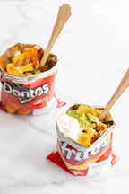
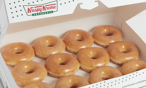
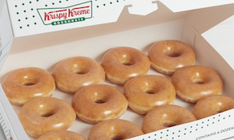
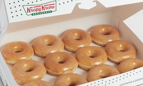

- Taco in a bag
- Gritz
- Cinnamon Rolls
- Christmas morning breakfast(donuts)

we usually have taco in a bag with fritos, meat, beans, cheese, sour cream, and guacamole. it is my favorite dinner/lunch at camp!

one of our favorite breakfasts is gritz. We usually have toppings like cheese, bacon, and green onions!
another camp favorite is cinnamon rolls! we have them for breakfast at least once! my first yeare at camp, I had cinnamon rolls my first day!

one day per session is Christmas! we get to sleep in an extra hour and when we wake up we get 2 krispy kreme donuts and hot chocolate! it is always one of my favorite days at camp!
home
one of our favorite breakfasts is gritz. We usually have toppings like cheese, bacon, and green onions!
another camp favorite is cinnamon rolls! we have them for breakfast at least once! my first yeare at camp, I had cinnamon rolls my first day!

one day per session is Christmas! we get to sleep in an extra hour and when we wake up we get 2 krispy kreme donuts and hot chocolate! it is always one of my favorite days at camp!
home

one day per session is Christmas! we get to sleep in an extra hour and when we wake up we get 2 krispy kreme donuts and hot chocolate! it is always one of my favorite days at camp!
home